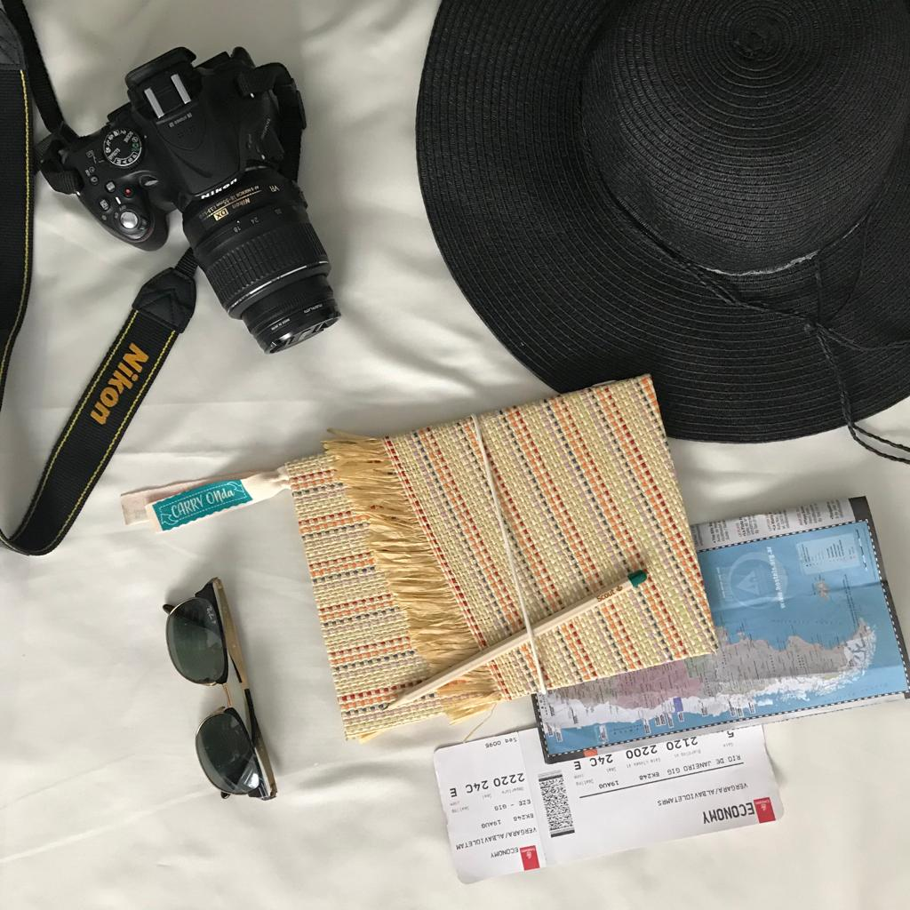

¿Quiénes somos?
Diseñamos objetos relacionados con el “Viajar”, productos creados en función de de los diferentes momentos o situaciones que se vive en torno a una viaje. Carry ON, Quiere decir “continuar” , “seguir adelante” , y lo relacionamos con el andar, el no quedarse quietos, el moverse.
¿Qué nos diferencia?
Para las distintas etapas que se atraviesan a la hora de viajar, pensamos en productos multifuncionales y prácticos. Ademas promovemos el Turismo Responsable y Sustentable, y en cada uno de los productos queremos transmite esta forma de repensar un viaje, desde su planificación hasta que se se realiza. Ponemos nuestro granito de arena para fomentar el Ecoturismo, el respeto por el medioambiente y el patrimonio cultural, como asi también la sociedad y las personas que estan involucradas en actividades turísticas.

¿Qué es el ecoturismo?
El ecoturismo o turismo ecológico está vinculado a un sentido de la ética ya que, más allá del disfrute del viajero, intenta promover el bienestar de las comunidades locales (receptoras del turismo) y la preservación del medio natural. El turismo ecológico también busca incentivar el desarrollo sostenible (es decir, el crecimiento actual que no dañe las posibilidades futuras).